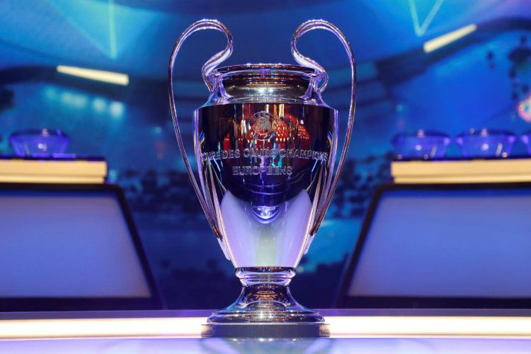
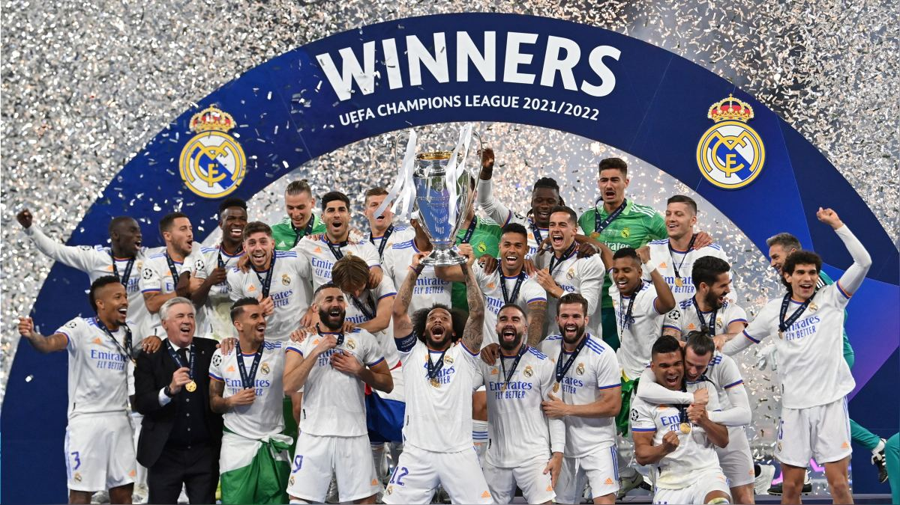
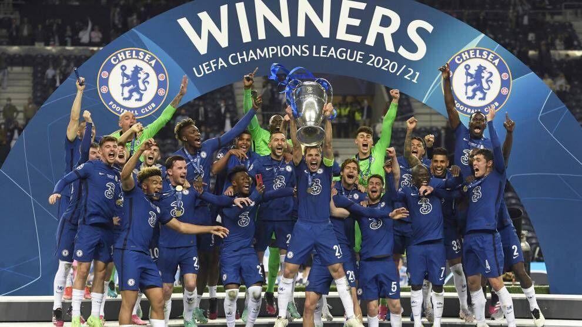
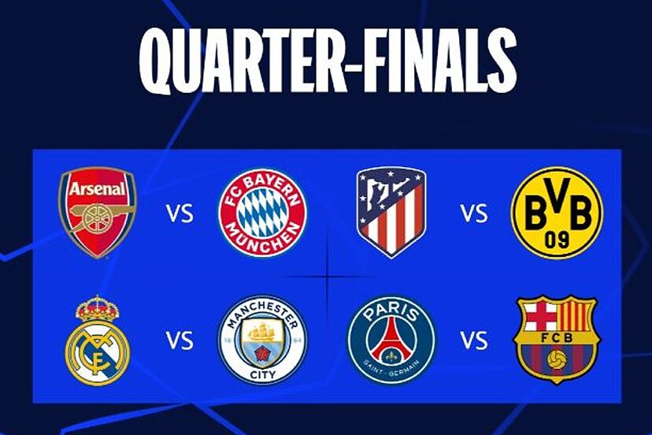

Champion League
La Champions League, también conocida como Liga de
Campeones de la UEFA, es la competición de clubes de fútbol más prestigiosa del
mundo.
Funcionamiento de la Competición
La Champions League comienza con una fase de grupos donde participan equipos de
distintos países europeos. Posteriormente, los mejores equipos avanzan a la fase de
eliminación directa, que culmina con la final, disputada en un estadio predeterminado cada
año.

Últimos Ganadores
- 2023: El campeón de esta edición fue el Manchester City, tras
derrotar por 1-0 al Inter de Milán en el Estadio Olímpico Atatürk de Estambul, sede de la
final. El club inglés logro llegar a la final invicto, logrando coronarse campeón por primera
vez en su historia.

- 2022: El campeón de esta edición fue el Real Madrid, tras
derrotar por 1-0 al Liverpool en el Stade de France en Saint-Denis, sede de la final.

- 2021: El Chelsea se proclamó campeón de Europa por segunda
vez gracias a un gol de Kai Havertz en la primera parte para derrotar al Manchester City por
0-1 en la final de la UEFA Champions League en el Estadio Olímpico Atatürk.

Equipos Clasificados para este Año
- FC Barcelona vs Paris Saint-Germain
- Manchester City vs Real Madrid
- Bayern Munich vs Arsenal
- Atletico de Madrid vs Borusia Dortmund

A continuación se podra ver una tabla con los datos sobre goles y asistencias de los mejores jugadores de la decada.
| Las cifras de los mejores futbolista de la década |
| Nombre |
Equipo en los que ha jugado |
Goles |
Asistencias |
| Messi |
Barcelona, Inter de Miami |
1040 |
368 |
| Cristiano Ronaldo |
Oporto, Real Madrid, Juventus, Man United, Al-Nassar |
885 |
283 |
| Neymar |
Barcelona, PSG, Al-Hilal |
360 |
40 |
Rellenar formulario sobre la Champion League
Para más información sobre la Champions League, visita el sitio oficial de la UEFA.